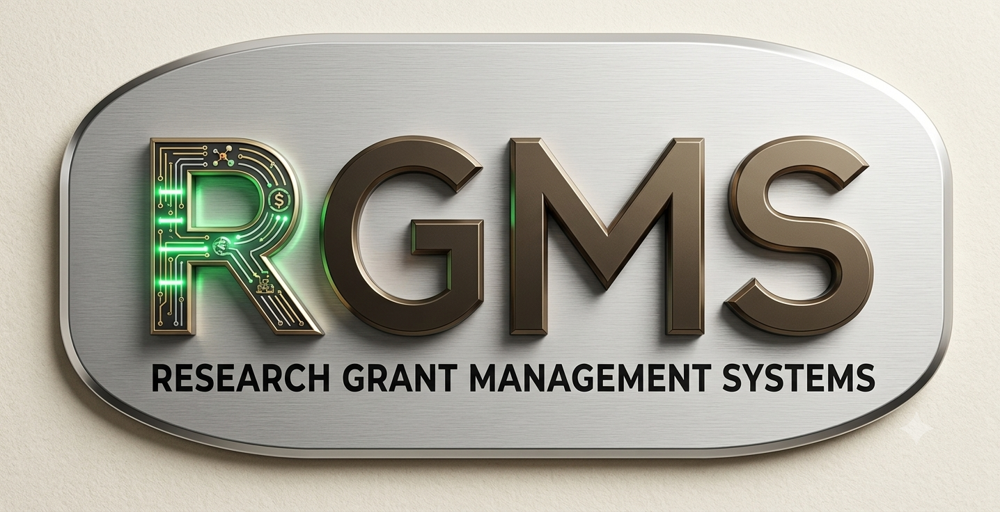
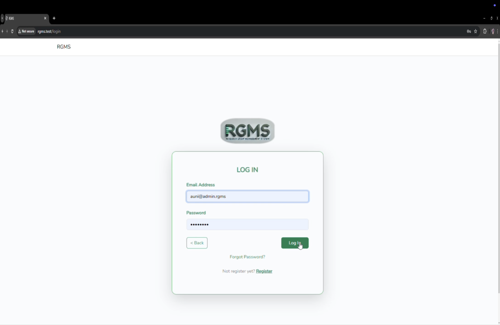
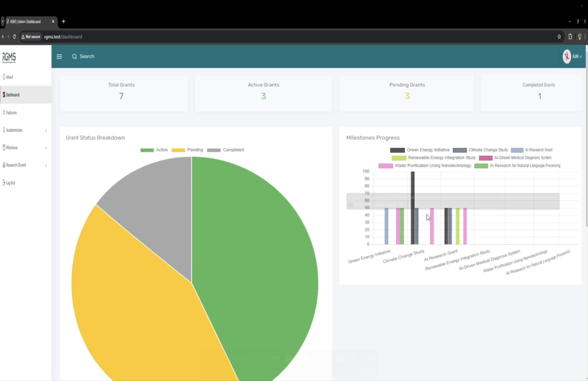
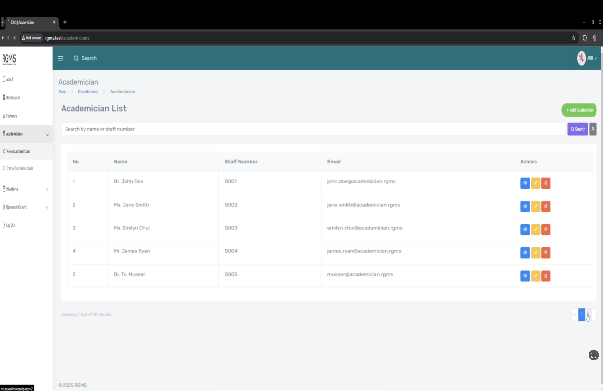
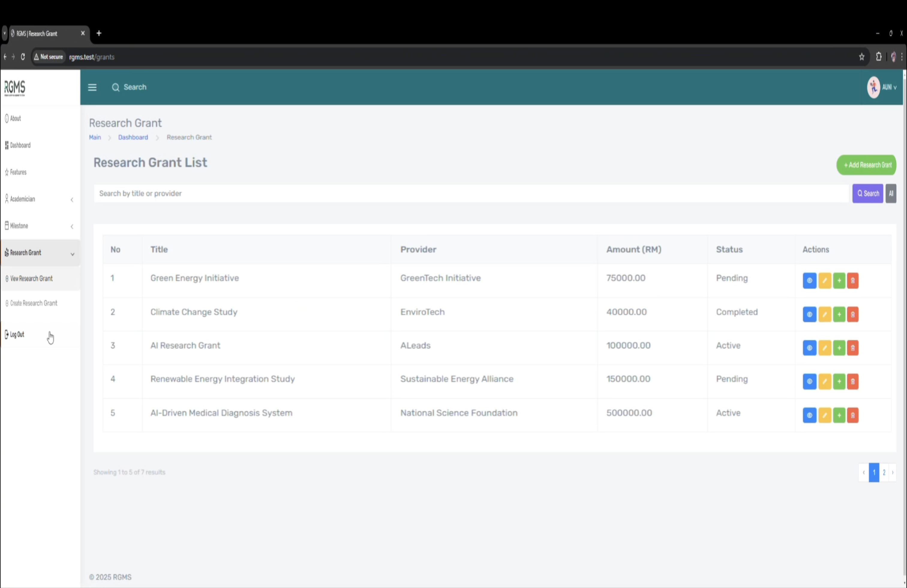
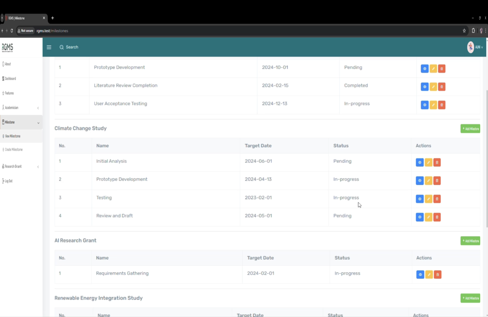

Individual Project | Web-Based System

The Research Grant Management System (RGMS) was developed to digitalize and streamline the management
of academic research grants within an institution. Traditionally, grant tracking, milestone updates,
and researcher information were handled manually or through fragmented systems, leading to inefficiencies
and lack of real-time visibility.
This system provides a centralized platform where administrators can manage academicians, research grants,
and milestone progress, while lecturers can view and update their own research-related information.
It ensures better transparency, accountability, and tracking of research progress from initiation to completion.
The system improves research governance by providing structured workflows, role-based access control,
and real-time dashboard analytics for grant performance monitoring.
| Information | Details |
|---|---|
| Project Type | University Academic Project (Individual) |
| Client | None |
| Duration | September 2024 – January 2025 |
| Role | Full-Stack Web Developer |
| Key Responsibilities |
|
| Methodology | Agile Development |
| Platform | Web Application |
| Tech Stack | Laravel, PHP, MySQL, HTML, CSS, JavaScript, XAMPP |
| Version Control | Git & GitHub |
Defined project objectives and identified issues in manual grant tracking systems.





Managing complex role-based access for admin, lecturer, and project leader roles.
Implemented structured role-based authentication and permission control in Laravel.
Ensuring accurate tracking of grants and milestone progress data.
Designed relational database structure with proper foreign keys and validation rules.
Building a real-time dashboard with aggregated grant statistics.
Used optimized database queries and Laravel logic to compute dashboard metrics efficiently.